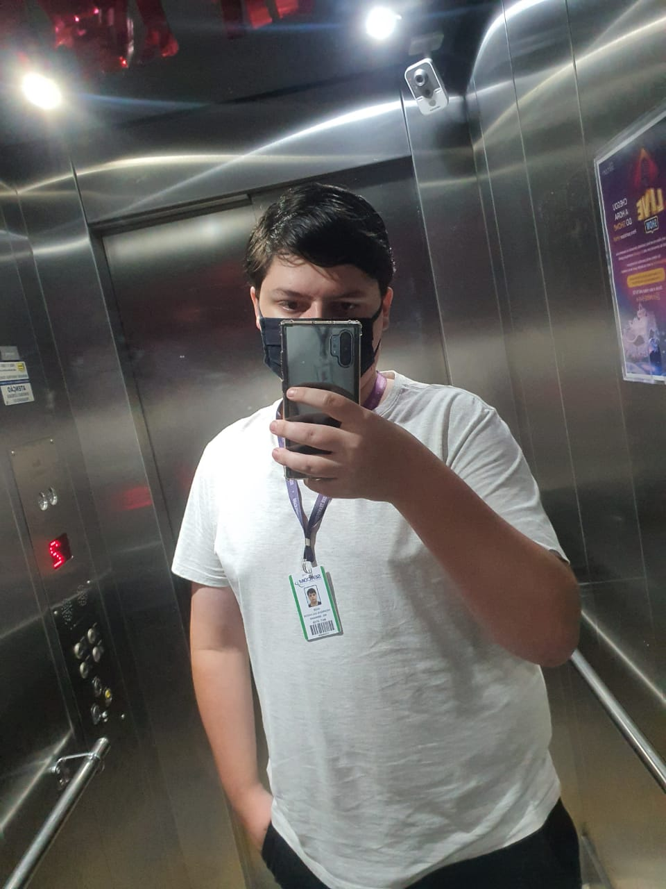
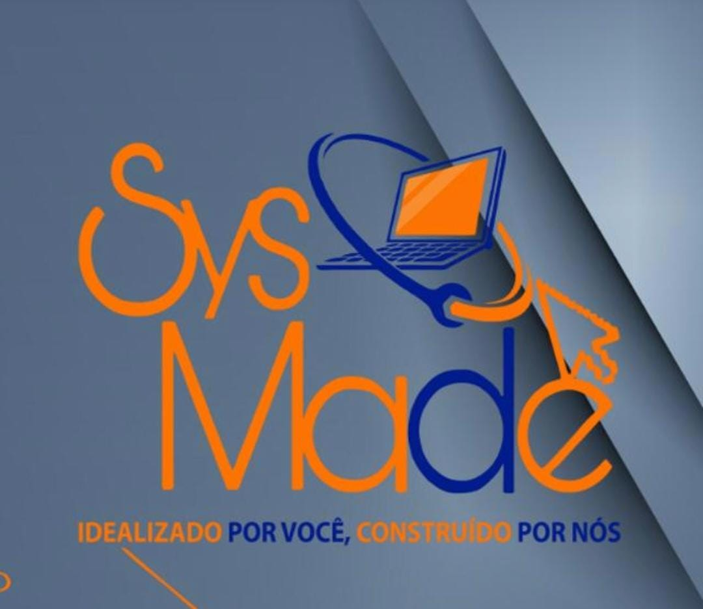
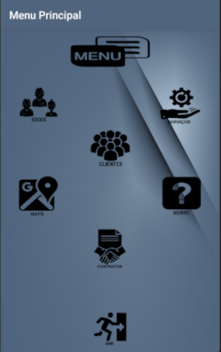

Quem sou?
Olá a todos, meu nome é Igor, aqui vou falar um pouco da minha jornada até o atual momento que vivemos em 2021. Como já foi dito me chamo Igor, atualmente sou estudante de desenvolvimento de sistemas e atuo como analista de suporte técnico na área. Ainda possuo pouca experiência, mas com o tempo estou me dedicando para adquirir o máximo possível.

Ao mesmo tempo sou apaixonado por jogos tanto quanto pela área de TI em si, principalmente na vertente de desenvolvimento de sistemas, atualmente estou cursando o técnico em desenvolvimento de sistemas, porém fiz um semestre de ciência da computação, infelizmente realizei o trancamento do curso por conta da pandemia de Covid-19, mas pretendo retornar a cursar o superior em 2021.
Formações:
- Ensino médio completo - Finalizado em 2019 - E. E. Alberto Torres
- Técnico em desenvolvimento de sistemas - Cursando 3° semestre - Etec Basilides de Godoy
- Curso de inglês - 4° ano de curso - Wizard
Cursos Complementares:
- Introdução a redes de computadores - 15 Horas - Fundação Bradesco
- Python Mundo 1 - 40 Horas - Curso em vídeo
- Python Mundo 2 - 40 Horas - Curso em vídeo
- Introdução ao JavaScript - 40 Horas - Curso em vídeo
- HTML5 e CSS3 Módulo 1 - 40 Horas - Curso em vídeo
- MySQL - 40 Horas - Curso em vídeo
- Lógica de Programação - 28 Horas - Udemy
Projetos:
Sys Made

Sys Made é um empresa ficticia criada durante o curso técnico com alguns colegas, a mesma seria um Start Up de desenvolvimento de software. Alguns projetos foram desenvolvidos durante o período de três anos e serão citados, criada em 2020 na Etec Professor Basilides de Godoy. A principio a mesma foi criada para realizar o desenvolvimento do sistemas Web, Desktop, Banco de dados dentre outros para a locadora de veículos Adminiscar.
Sys-Made Maneger System

Este projeto mobile foi desenvolvido no segundo semestre do curso de desenvolvimento de sistemas, com a intenção de cadastrar, gerenciar e realizar todo o CRUD dos dados de serviços prestados pela Sys-Made. O mesmo ainda está em desenvolvimento, essa é a primeira versão do mesmo e ainda serão realizadas optimizações e melhoras no sistema base.